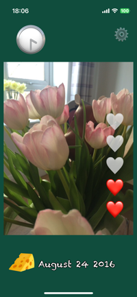
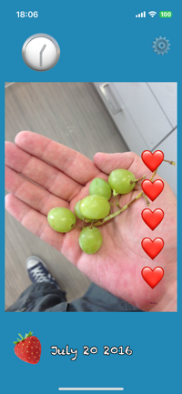
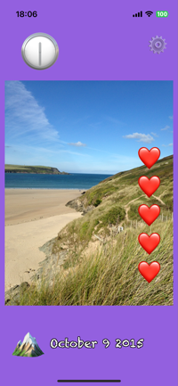
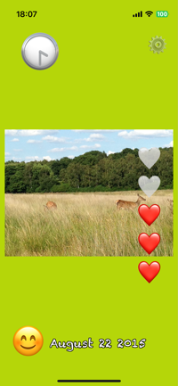

A simple and fun photo and video viewer, perfect for young children.
   Send feedback or support requests to @kevinthornberry on X
Last Updated March 2025
Happy Swipe ("we", "us", or "our") operates the Happy Swipe mobile application (the "Service").
Our Service does not collect, store, or share any personal information or data from users. We are committed to your privacy and ensuring your personal information remains safe and secure.
While using our Service, please note that no data is collected automatically or through any third-party analytics services.
Our Service does not use “cookies” to collect data or track user activities.
We may update our Privacy Policy from time to time. We will notify you of any changes by posting the new Privacy Policy on this page and updating the "Last Updated" date at the top. We recommend that you review this Privacy Policy periodically for any changes.